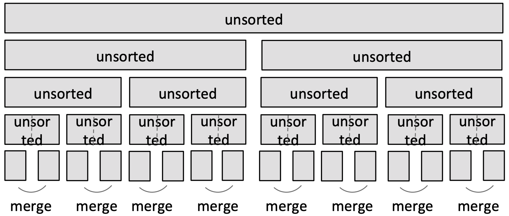
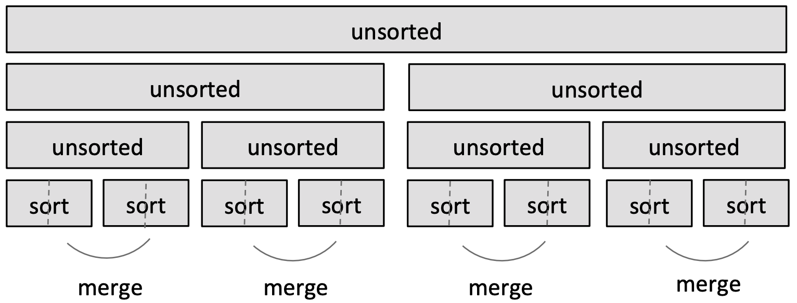
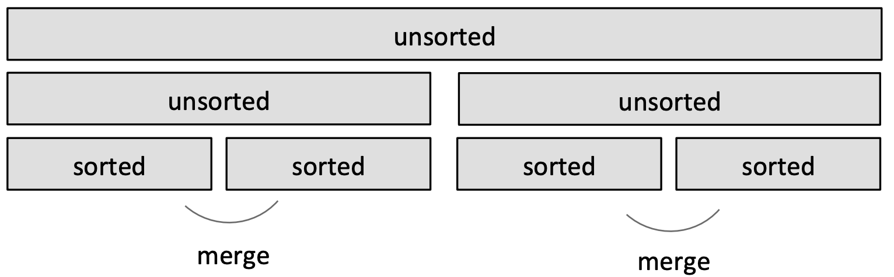
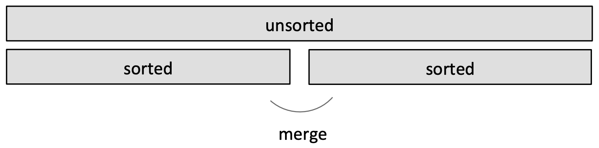
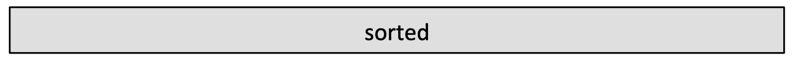
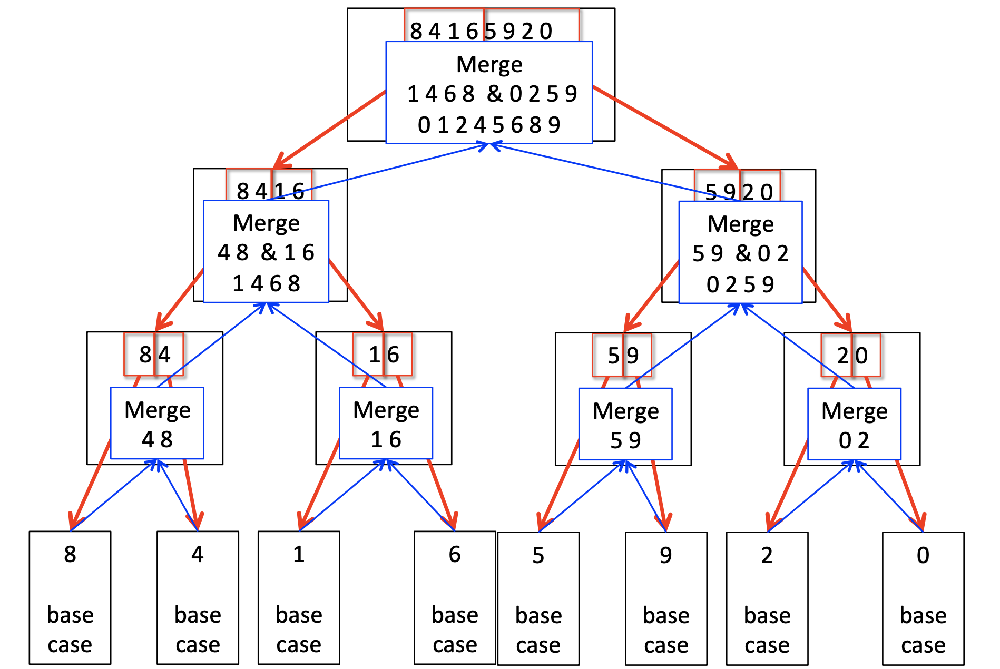

Search Algorithms
- Search algorithm --- method for finding an item or group of items with specific properties within a collection of items.
- Collection could be implicit
- example --- find square root as a search problem
- Exhaustive enumeration
- Bisection search
- Newton-Raphson method
- Collection could be explicit
- Example --- is a student record in a stored collection of data?
Searching algorithms:
- Linear search
- Brute force search (aka Museum algorithm)
- List does not have to be sorted
- Search for an element is
O(n)
- Binary search
- List must be sorted to give correct answer
- Saw two different implementations of this algorithm: with and without copying
- Search for an element is
O(log n) (for the implementation that avoids copying)
- When does it make sense to sort first then search (using binary search)?
-
SORT + O(log n) < O(n), or SORT <O(n)-O(log n)
- When is
SORT less than O(n)? NEVER! To sort a collection of n elements, you must look at each element at least once!
Amortized cost
Why may one bother sorting first?
- In some cases, may sort the list once, and then do many searches
- Amortize cost of the sort over many (say K) searches
-
SORT + k*O(log n) < K*O(n)
- For large
K, SORT time becomes irrelevant, if cost of sorting is small enough
Sort Algorithms
- Want to efficiently sort a list of entries
- Will see a range of methods, including one that is quite efficient
Monkey sort
- Also known as bogosort, stupid sort, slow sort, permutation sort, shotgun sort
- To sort a deck of cards:
- Throw them in the air
- Pick them up
- Are they sorted?
- Repeat if not sorted
def bogo_sort(L):
while not is_sorted(L):
random.shuffle(L)
- best case:
O(n) where n is len(L) to check if sorted
- worst case:
O(?) it is unbounded if really unlucky
Bubble sort
- Compare consecutive pairs of elements
- Swap elements in pair such that smaller is first
- When reach end of list, start over again
- Stop when no more swaps have been made
- Largest unsorted element always at end after pass, so at most
n passes
 In this animation, we assume that the first
In this animation, we assume that the first n integers are present in the list in a random order. As the passes of bubble sort proceed, the largest elements start identifying their correct position, e.g., the integer of value n is at the nth index.
Code:
def bubble_sort(L):
swap = False
while not swap: # O(len(L))
swap = True
for j in range(1, len(L)): # O(len(L))
if L[j-1] > L[j]:
swap = False
temp = L[j]
L[j] = L[j-1]
L[j-1] = temp
- Inner loop is for doing the comparisons
- Outer while loop is for doing multiple passes until no more swaps
-
O(n2) where n=len(L) to do n-1 comparisons and n-1 passes.
Selection sort
- First step
- Extract minimum element
- Swap it with element at index 0
- Subsequent step
- In remaining sublist, extract minimum element
- Swap it with the element in index 1
- Keep the left portion of the list sorted
- At ith step, first i elements in the list are sorted
- All other elements are bigger than the first i elements
Analyzing slection sort
- Loop invariant
- Given prefix of list
L[0:i] and suffix L[i:len(L)], then prefix is sorted and no element in prefix is larger than the smallest element in the suffix.
- Base case: prefix empty, suffix whole list -- invariant true
- Induction step: move minimum element from suffix to the end of prefix. Since invariant true before move, prefix sorted after append. Also, no element in prefix larger than the smallest element in the suffix still holds.
- When exit, prefix is entire list, suffix empty, so list sorted.
Complexity of selection sort
def selection_sort(L):
suffixSt = 0
while suffixSt != len(L): # executed len(L) times
for i in range(suffixSt, len(L)): #executed len(L) - suffixSt times
if L[i] < L[suffixSt]:
L[suffixSt], L[i] = L[i], L[suffixSt]
suffixSt += 1
- Outer loop executes
len(L) times
- Inner loop executes
len(L)-suffixSt times
- Complexity of selection sort is (where
n=len(L)): n+(n-1)+(n-2)+...+(n-n) or O(n2).
Merge sort
Use a divide-and-conquer approach:
- If list is of length 0 or 1, already sorted
- If list has more than one element, split into two lists and sort each
- Sorting of smaller lists is self-similar
- Merge sorted sublists
- Look at the first element of each, move smaller to end of the result
- When one list empty, just copy rest of other list
Idea:
- Divide and conquer

- Split list in half until have sublists of only one element.
- Merge such that sublists will be sorted after merge

- Merge sorted sublists; sublists will be sorted after merge.

- Again.

- Done!

Example of merging:
| Left in list 1 | Left in list 2 | Compare | Result |
| [1,5,12,18,19,20] | [2,3,4,17] | 1, 2 | [] |
| [5,12,18,19,20] | [2,3,4,17] | 5, 2 | [1] |
| [5,12,18,19,20] | [3,4,17] | 5,3 | [1,2] |
| [5,12,18,19,20] | [4,17] | 5,4 | [1,2,3] |
| [5,12,18,19,20] | [17] | 5,17 | [1,2,3,4] |
| [12,18,19,20] | [17] | 12,17 | [1,2,3,4,5] |
| [18,19,20] | [17] | 18,17 | [1,2,3,4,5,12] |
| [18,19,20] | [] | 18,-- | [1,2,3,4,5,12,17] |
| [] | [] | 18,-- | [1,2,3,4,5,12,17,18,19,20] |
Merging sublists step
def merge(left, right):
result = []
i, j = 0, 0
while i < len(left) and j < len(right):
#left and right sublists are ordered.
#move indices for sublists depending on which sublist holds next smallest element
if left[i] < right[i]:
result.append(left[i])
i += 1
else:
result.append(right[j])
j += 1
while i < len(left):
#when right sublist is empty
result.append(left[i])
i += 1
while j < len(right):
#when left sublist is empty
result.append(right[j])
j += 1
return result
Complexity of merging sublists step
- Go through two lists, only one pass
- Compare only smallest elements in each sublist
-
O(len(left)+len(right)) copied elements
-
O(len(longer list)) comparisons
- Linear in length of the lists
Mergesort algorithm recursive
def merge_sort(L):
if len(L) < 2:
return L[:] #base case
else:
middle = len(L)//2
left = merge_sort(L[:middle]) #divide; first half
right = merge_sort(L[middle:]) #divide; second half
return merge(left, right)
- Divide list successively into halves.
- Depth-first such that conquer smallest pieces down one branch first before moving to larger pieces.
- Notice that we are copying the lists while seeting up the recursive calls, and also inside
merge(). We do not worry about it because the merge() step is anyway O(n).

Complexity of mergesort
- At first recursion level
- n/2 elements in each list, where n is len(L)
- c1*n/2 [copy] + c1*n/2 [copy] + c2*n [merge] = (c1+c2)*n
- At second recursion level
- n/4 elements in each list
- Two merges: 2*(c1*n/4 [copy] + c1*n/4 [copy] + c2*n/2 [merge]) = (c1+c2)*n
- At kth recursion level
- n/2k elements in each list
-
2k merges: 2k*(c1*n/2k+1 [copy] + c1*n/2k+1 [copy] + c2*n/2k [merge]) = (c1+c2)*n
- Each recursion level is
O(n)
- Number of recursion levels is
O(log n)
- Overall complexity:
O(nlog n)
Sorting summary:
- Bogo sort
- randomness, unbounded
O()
- Bubble sort
- Selection sort
- Mergesort
- Claim (without proof):
O(n log n) is the fastest sort there can be for elements of arbitrary type.